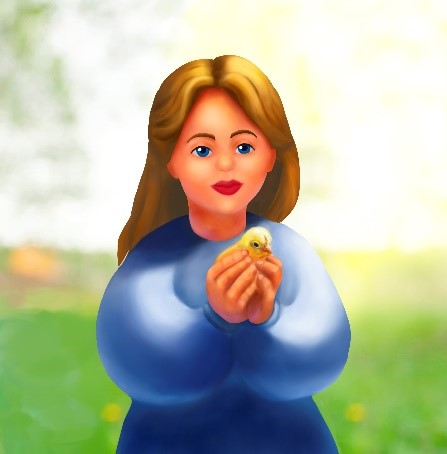
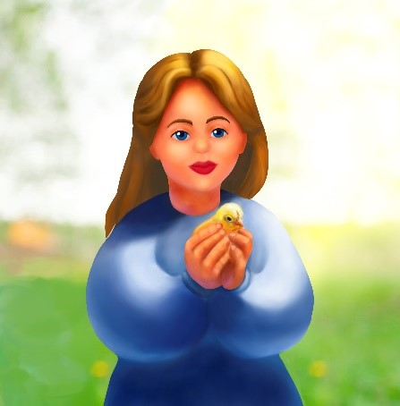

Тетяна Новіцька

Дата народження: 24 жовтня 1991
Моб. тел: +380967965192
E-mail: tasya_2410@ukr.net
Адреса: Київ, Україна
Народилась в смт. Глухівці Вінницької обл. В 2013 році закінчила Київський національний торговельно-економічний університет за спеціальністю "Фінанси та кредит". Але бажання малювати не зникало з дитинства. Першими роботами були копіювання ілюстрацій з дитячих книжок з казками. В дитинстві виникало бажання малювати на холсті. І тоді в хід ішли ДСП, шматки старого простирадла та гуаш. Потім малювала рідко. Хіба що шкільні газети та на уроках малювання. Під час навчання в університеті знову почала малювати та в якості подарунків друзям, створювала їх портрети графітним олівцем. Потім знову була перерва. Але настав час втілення дитячої мрії створення картин олією на полотнах. Кілька робіт були створені на замовлення. Але далі була мрія створювати цифрові малюнки. І для цього були зібрані кошти для придбання більш потужного ноутбуку та планшету. Взявшись за планшет, руки здавались незграбними, тому наступним кроком був вибір курсів.
 

Бажаєте замовити digital ілюстрацію? Або у вас виникли запитання?
Тоді заповніть, будь ласка, форму. І ми Вам обов'язково надамо зворотний зв'зок